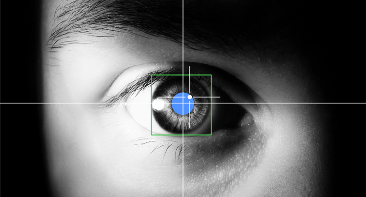

This game uses your web camera to track where you’re looking at the computer screen.
This game uses your web camera to track where you’re looking at the computer screen.
This HIT only works in the Chrome web browser. And the size of your screen should be at least 15 inches.
A high-resolution web camera is required. You can use a laptop with built-in camera, or mount a camera at the top-center of your screen.
Click to Test Your Computer Set-up
Sit in a quiet, well-lit area.
Make sure your face is lit from the front.
Face forward to the screen.
Keep your head as still as possible.
When looking at images, try to avoid blinking or talking.
Don't wear eyeglasses or sunglasses. Contacts are okay.
Eyeglasses will disqualify you from this task. Sorry!
1. Start camera
Please allow camera access when prompted by your browser.
2. Go to fullscreen mode
Please allow full-screen mode when prompted by your browser.
3. Face tracking
The software will start to track your face position and display some green lines marking eyes, nose and mouth. Move your head pose around a little to see that the green lines follow properly. PLEASE MAKE SURE THE TRACKING IS CORRECT BEFORE YOU BEGIN THE GAME.
4. Train a gaze gun
Next, you will see a sequence of angry birds. Look at each bird until a following colorful dot disappears. DO NOT LOOK AWAY BEFORE NEXT BIRD SHOWS UP.This part is to train your gaze gun and check that the eye tracker is working well. To train a powerful gaze gun, please keep your head position fairly constant and follow the dots by moving your eyes but avoid blinking.
5. Kill pigs
Each time you finish training the gaze gun, you will see pigs appear sequentially at a random location on your screen. The green crosshair indicates the direction of your gaze and it turns red when successfully hitting the target. Shoot each pig by staring at it. The game restarts if you fail to kill the pigs within a limited time. You will earn bonus points based on remaining time.
6. Images
Next, you will see a series of pictures of ordinary scenes. Please look at them naturally. Pay close attention to those images for a later memory game.

7. Memory Game
In the end, you will play a memory game to catch 3 hidden evil pigs. Locate pigs by clicking on images that you have seen in the current HIT. You will earn bonus points based on remaining time. Notice: you might be disqualified for our future HITs if your performance of this memory game is too low.
Keeping your head still is critical to pass the test and get a high score. You can use various ways to support your head such as leaning back a chair, using a pile of books to rest your chin etc.
Make sure tracking works:
* Make sure your whole face is visible and lighting is good.
* Move your hair to the side to ensure eyebrows are tracked correctly.
* Try sitting closer or further if the tracking does not seem to work well.
* Click the "restart tracking" button if the tracking seems to be broken.